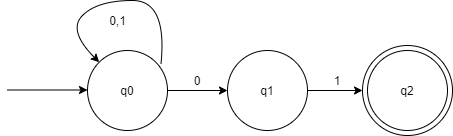
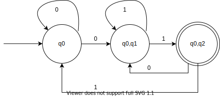

Apa itu
Finite Automata?
Finite Automata adalah mesin automata dari suatu Bahasa regular. Finite Automata memiliki jumlah state yang banyaknya berhingga dan dapat berpindah-pindah dari suate state ke state yang lainnya. Finite Automata dibagi menjadi Deterministic Finite Automata (DFA) dan Non Deterministic Finite Automata (NFA).

Prosedur Konversi NFA to DFA
01
Buat semua state yang merupakan subset dari state semula. Jumlah state menjadi 2Q.
02
Telusuri transisi state-state yang baru terbentuk, dari diagram transisi.
03
Tentukan state awal : {q0}
04
Tentukan state akhir adalah state yang elemennya mengandung state akhir.
05
Reduksi state yang tak tercapai oleh state awal.
Contoh Soal
Diberika diagram NFA sebagai berikut:
Sehingga dapat dibuat tabel transisi untuk NFA seperti berikut:
| 0 | 1 | |
|---|---|---|
| q0 | q0,q1 | q0 |
| q1 | - | q2 |
| q2 | - | - |
1. Buat semua state yang merupakan subset dari state semula. jumlah state menjadi 2Q
| 0 | 1 | |
|---|---|---|
| q0 | q0,q1 | q0 |
| q1 | - | q2 |
| *q2 | - | - |
| q0,q1 | - | - |
| q0,q2 | - | - |
| q1,q2 | - | - |
| q0,q1,q2 | - | - |
2. Telusuri transisi state–state yang baru terbentuk, dari diagram transisi.
| 0 | 1 | |
|---|---|---|
| q0 | q0,q1 | q0 |
| q1 | - | q2 |
| *q2 | - | - |
| q0,q1 | q0,q1 | q0,q2 |
| q0,q2 | q0,q1 | q0 |
| q1,q2 | - | q2 |
| q0,q1,q2 | q0,q1 | q0,q2 |
3. Tentukan state awal : q0.
| 0 | 1 | |
|---|---|---|
| ->q0 | q0,q1 | q0 |
| q1 | - | q2 |
| *q2 | - | - |
| q0,q1 | q0,q1 | q0,q2 |
| q0,q2 | q0,q1 | q0 |
| q1,q2 | - | q2 |
| q0,q1,q2 | q0,q1 | q0,q2 |
4. Tentukan state akhir adalah state yang elemennya mengandung state akhir.
| 0 | 1 | |
|---|---|---|
| ->q0 | q0,q1 | q0 |
| q1 | - | q2 |
| *q2 | - | - |
| q0,q1 | q0,q1 | q0,q2 |
| *q0,q2 | q0,q1 | q0 |
| *q1,q2 | - | q2 |
| *q0,q1,q2 | q0,q1 | q0,q2 |
5. Reduksi state yang tak tercapai oleh state awal.
| 0 | 1 | |
|---|---|---|
| ->q0 | q0,q1 | q0 |
| q0,q1 | q0,1 | q0,q2 |
| *q0,q2 | q0,q1 | q0 |
Dari hasil tersebut maka akan diperoleh hasil sebagai berikut :
